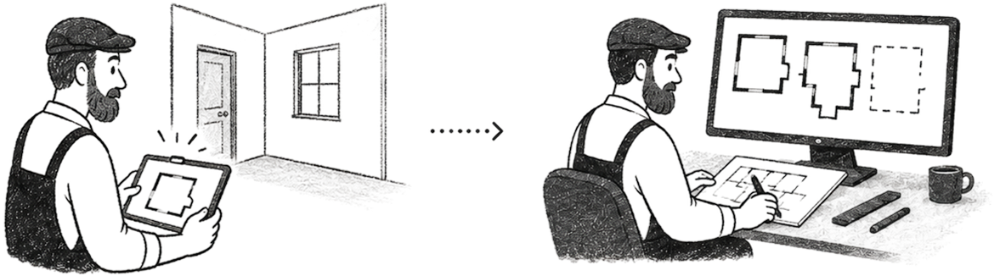
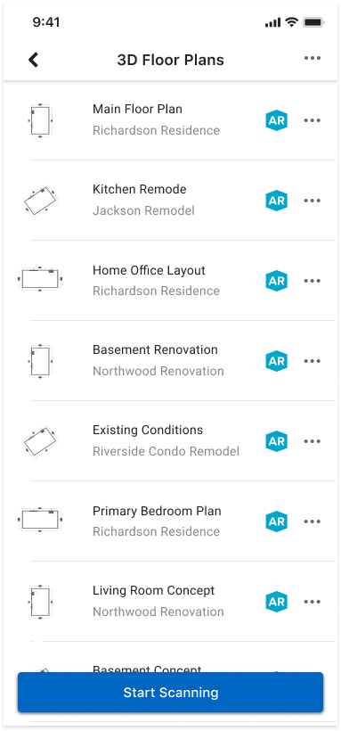

Pros could scan a room with their phone by marking each wall corner. Multi Room Scan let them continue from room to room and build one connected floor plan.
The mobile flow was built around completing one room at a time. Pros could scan the space, add doors and windows, and continue refining the plan later on desktop. But once a project included more than one room, that flow no longer matched the way they worked.

Designed to capture one enclosed room at a time



The problem
The scan stopped at one room.
Each additional room had to be started as a separate floor plan, even when it belonged to the same project.
One project, separate floor plans.

No way to reconnect them
Rooms from the same project appeared as separate plans, even though they belonged to one home.
I don't want to stop after every room. I need the scan to keep up with the way I move through the home.
I need to know where this new room connects before I move on, otherwise I'm not sure I can trust the plan.
The goal
Let pros move from room to room while keeping enough context to build one connected floor plan.
At first, it sounded simple: let pros keep scanning. But once they entered the next room, we still had to figure out where it belonged in the plan. Every room needed to stay connected to the same shared reference, and that turned out to be one of the hardest parts of the project.


We used the phone's location data to estimate where each room belonged on the shared map. When that estimate drifted, the rooms stopped lining up.
The friction
Each dialog solved a real problem. Together, they interrupted the flow.
We needed to explain what happened after each room, where pros could go next, and what still needed to be saved. Each step made sense on its own. Together, they kept stopping the scan.


As we worked to cut the dialogs down, a second problem surfaced - one that had nothing to do with copy. The rooms themselves weren't always lining up.
Meanwhile, we discovered a technical problem: rooms didn't always line up on the shared map. Pros needed a way to move, rotate, or remove them manually.

Our first attempt was to give pros manual controls to move, rotate, and remove rooms. We introduced them through a short tutorial.


The controls solved the technical problem, but the tutorial became another interruption. Explaining the workaround didn't make it easier to use.
We realized that more guidance wasn't making the experience easier. So we changed the flow itself: guidance appeared when it was needed, rooms could be adjusted without leaving the scan, and continuing or finishing became a clear choice.
A single "Point" action became a persistent action bar, and the plain white dashed edge became a richer turquoise line system - making edges, corners, and room continuity easier to read during capture.


The editing capability already existed, but the interaction felt fragmented. We refined the flow so pros could add, position, and resize openings more smoothly without losing their place in the scan.


Previously, users had to move through multiple dialogs to understand whether they were continuing or finishing. We made both decisions visible in the scan itself: move to the next room, or finish and review the plan.

The new flow let pros scan, adjust, and continue from room to room without losing their place.


After launch, connected capture moved from an edge case to a regular part of mobile floor plan creation - a sign the flow was helping pros build connected plans on site.
Share of mobile scans using multi-room, at its peak
Room-to-room continuation events
The challenge wasn't just scanning more rooms; it was helping users stay oriented, keep momentum, and trust the plan as it grew.
01
Pros needed to understand where they were and trust the plan enough to keep moving, even when the spatial reference was imperfect.
02
Instructions were most useful when they appeared in context, rather than as separate dialogs that interrupted the scan.
03
Users needed to adjust, continue, or finish without losing their place or feeling blocked.
What I loved most was being able to test the flow anywhere. I could scan real spaces, catch issues as they happened, and give developers immediate feedback while we were still shaping the experience.